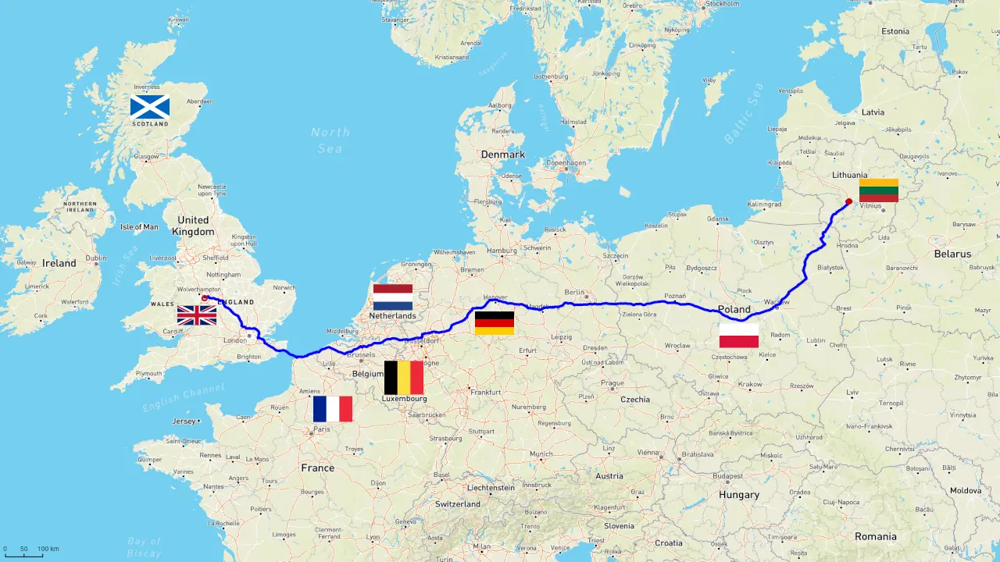

Lietuva-Britanija
Keleivių, bagažo, siuntinių, krovinių, automobilių, motociklų, buitinės technikos, baldų, gyvūnų pervežimai. Mes keliaujame per Lietuvą, Lenkiją, Vokietiją, Olandiją, Belgiją, Prancūziją ir Angliją.
Kontaktai
UK : +44-799-9909-093
LT : +370-689-303-00
✉ : info@lietuva-britanija.eu
Paslaugos
Keleivių pervežimas
Siūlome keleivių pervežimo paslaugas iš Lietuvos į Angliją ir į aukščiau paminėtas šalis. Kelionė mikroautobusais yra pigus, greitas ir saugus būdas keliauti. Išvykstame kiekvieną savaitę, bei turime daug vietos jūsų bagažui. Kelionės trukmė priklauso nuo oro ir kelių sąlygų, todėl tikimės iš jūsų santūrumo ir supratingumo. Transporto priemonės atitinka Euro NCAP saugumo ir EURO6 aplinkos taršos reikalavimus. Važiuojame patogiais ir komfortiškais mikroautobusais su atlenkiamomis sėdynėmis, įmontuota DVD sistema ir oro kondicionieriumi. Lankstus važiavimo grafikas garantuoja palankias kelionės kainas ir skubų pristatymą, pastovūs klientai ir žmonių grupės naudojasi nuolaidų sistema. Dėl išsamesnės informacijos prašome susisiekti aukščiau nurodytais kontaktais.
Siuntinių pervežimas
Surenkame siuntinius. Išvykstame kiekvieną savaitę. Pristatome į aukščiau paminėtas šalis. Draudžiama siuntiniuose vežti cigaretes ar tabako gaminius, narkotines medžiagas, alkoholinius gėrimus, sprogstamas medžiagas, pinigus, asmens dokumentus, brangakmenius. Dėl išsamesnės informacijos prašome susisiekti aukščiau nurodytais kontaktais.
Automobilių ir motociklų pervežimas
Automobilių ir motociklų pervežimas iš Anglijos į Lietuvą ir į kitas paminėtas šalis. Taip pat sugedusias, daužtas transporto priemones pristatysime saugiai ir laiku. Jei nusipirkote automobilį, mes jį galime jums pervežti. Dėl išsamesnės informacijos prašome susisiekti aukščiau nurodytais kontaktais.
Gyvūnų pervežimas
Jūsų augintinis-mūsų draugas. Visos kelionės metu rūpinsimės, kad Jūsų augintinis būtų pamaitintas ir pagirdytas. Suprantame, kokį stresą keliaudami patiria gyvūnai, todėl kiekvieno sustojimo metu esant saugioms sąlygoms leisime pabėgioti ir įkvėpti gryno oro bei rūpinsimės švara. Nuvešime Jūsų augintinį saugiai ir patogiai. Dėl išsamesnės informacijos prašome susisiekti aukščiau nurodytais kontaktais.
